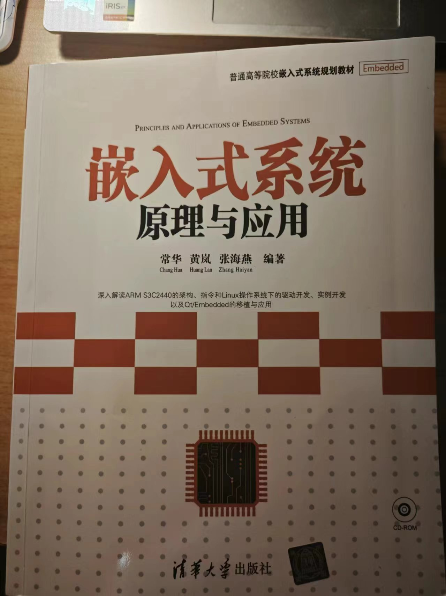

0 前言
本学期开了一门计算机专业的选修课，却是我们专业的必修课，即————嵌入式智能系统。这门课应该是综合之前多门计算机专业必修课的内容 包含：计算机组成原理、汇编语言等等。本人作为非计算机专业的同学，上这门课也是非常汗颜。因此决定把个人学习的过程记录下来。一方面是学习，另一方面是作为一个宝贵的形式保存下来。
本博客采用清华大学出版社的《嵌入式系统原理与应用》这本书位主要参考，作者是常华、黄岚、张海燕。同时会尽量把补充的一些非计算机专业同学（比如我）没有学过的知识补充进来。

1 微机原理相关补充知识（持续更新）
本章节记录我为学习嵌入式系统而补充自学的微机原理相关知识，参考课本为《微机原理与接口技术》，B站上西安电子科技大学的课程，非常值得推荐，大家可以配合课本结合起来观看
1.1 微机结构与工作原理
1.1.1 经常用到的概念：
（1）微处理器：就是CPU，由运算器、寄存器、控制器及片内总线等构成
（2）位（bit）：二进制0、1，是计算机最小信息处理单位
（3）字节（byte）：8位，计算机（8086）最小存储单元
（4）字（word）：16位，计算机（8086）最小操作数单位，是2个字节
（5）字长（word length）：CPU一次可以处理的二进制数的位数
（6）指令系统：CPU所能执行的全部指令的合集，分为复杂指令系统（CISC）和精简指令系统（RISC），ARM采用的是精 简指令系统（RISC）
（7）缓存：Cache Memory，是CPU的高速存储器，可以将常用数据存入，从而缩短CPU访问数据的时间
1.1.2 现代微机的总线结构
微机系统中的总线，按照传送信息的种类主要是：
1.数据总线（DB）：用于传送数据，双向
2.地址总线（AB）：用于传送地址，单向，由CPU发出
3.控制总线（CB）：用于传送控制信号，双向
总线是传递信息的通道，CPU需要通过总线与外界联系
1.1.3 工作原理
1.实现既定任务指令序列
2.将程序存入随机存储器RAM或只读存储器ROM中
计算机按照如上两步按顺序完成所有指令就可以完成任务
计算机执行一条指令的过程如下：
CPU从RAM中读取一条指令，然后将指令中的操作码和操作数送入运算器，运算器执行操作码所对应的运算，最后将运算结果送入CPU的寄存器，然后CPU根据指令中的控制信号，决定是否将结果送入存储器，从而完成一条指令的执行
1.2 微处理器的结构功能——以8086CPU为例
1.2.1 CPU结构
CPU由4个部分组成：
（1）算数逻辑单元（ALU）：实现运算功能
（2）工作寄存器：可以暂存寻址信息和计算过程的中间结果
（3）I/O接口：与外设通信
（4）控制器：完成指令读入、寄存和译码，并产生通讯信号序列，是ALU完成特定操作。
控制器的组成：
（1）程序计数器（PC）：用来存储下一条要执行的指令的地址
（2）指令寄存器（IR）：用来存储当前要执行的指令
（3）指令译码器（ID）：从存储器读入当前要执行的指令
（4）控制逻辑部件
（5）微处理器状态字（PSW）：寄存处理器当前状态
（6）堆栈指针（SP）：用来存储当前的堆栈地址
1.2.2 寄存器组织
8086CPU有14个16位寄存器，按功能分为8个通用寄存器，4个段寄存器和两个控制寄存器
通用寄存器两种：
1.数据寄存器：AX，BX，CX，DX
这四个是16位数据寄存器，他们又可以按如下的方法分成8个8位寄存器：
1 | AX->AH,AL |
2.地址寄存器：SI，DI，SP，BP
这四个寄存器主要提供16位段内偏移地址，由段寄存器提供段地址后，可以形成20位物理地址
1 | 物理地址 = 段地址x10H + 偏移地址 |
段寄存器：CS，DS，ES，SS
分别代表code,data,extra,stack segment
控制寄存器：
(1)指令指针（IP）：也称为程序计数器（PC），保存下一条要执行的指令的段内偏移地址
(2)微处理器状态字（PSW）：用来存储CPU当前状态，由9个标志位：
状态标志：CF，PF，AF，ZF，SF，OF
分别代表进位标志，奇偶标志，辅助进位标志，零标志，符号标志（负数时为1），溢出标志
控制标志DF，IF，TF
分别表示：方向、中断、陷阱标志
1.2.3 存储器
CPU一个总线周期内可以取一个字
物理地址由段内地址和段内偏移地址两部分构成，段地址一般默认在对应的段寄存器中。
计算方法上文已经给出，物理地址也可以表示成逻辑地址的形式，例如0800H:0100H，其物理地址为08100H
CPU通过四个段寄存器访问不同的段（当前段），来分类存储信息。存储器中的信息一般分为3大类，他们默认指定的段寄存器如下：
（1）程序段：CS
（2）数据段：DS，还可以附加ES
（3）堆栈段：SS
如果指令没有指定则采用默认段寄存器
2 ARM微处理器体系结构
主要以ARM9为例进行学习
2.1 ARM微处理器体系结构概览
2.1.1 RISC指令集
RISC指令集的特点：
1.仅选取使用频率最高的简单指令
2.指令长度固定，指令种类、寻址方式少
3.只有存数、取数指令访问存储器，其余均在寄存器内完成
4.采用流水线技术，大部分指令在一个指令周期内完成
5.多个通用寄存器
6.组合逻辑控制
7.优化编译
2.1.2 THUMB指令集
ARM微处理器增加了THUMB指令集，它是16位的指令集，是32位ARM指令集的子集，按16位重新编码，可以与ARM指令集一起使用。提高了代码密度
多出来一个THUMB指令集后，THUMB和ARM指令集之间的转换
引出了3个问题
1.汇编程序如何汇编？
答：
2.如何取指令？
答：
3.如何执行指令?
答：